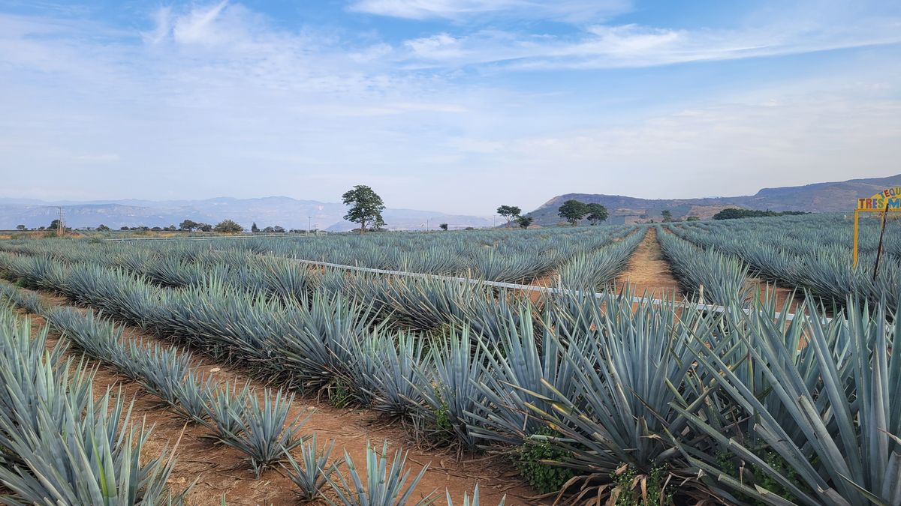
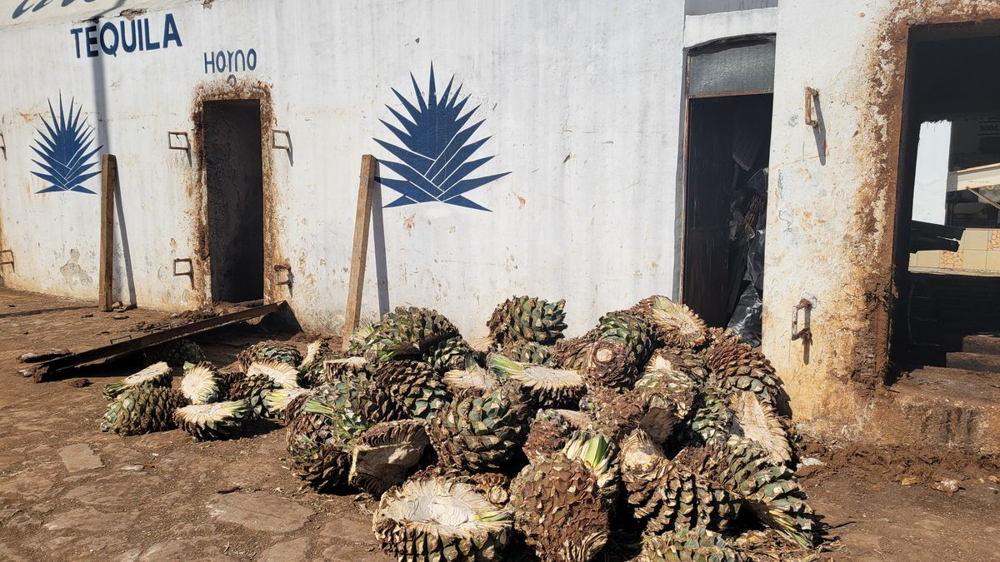
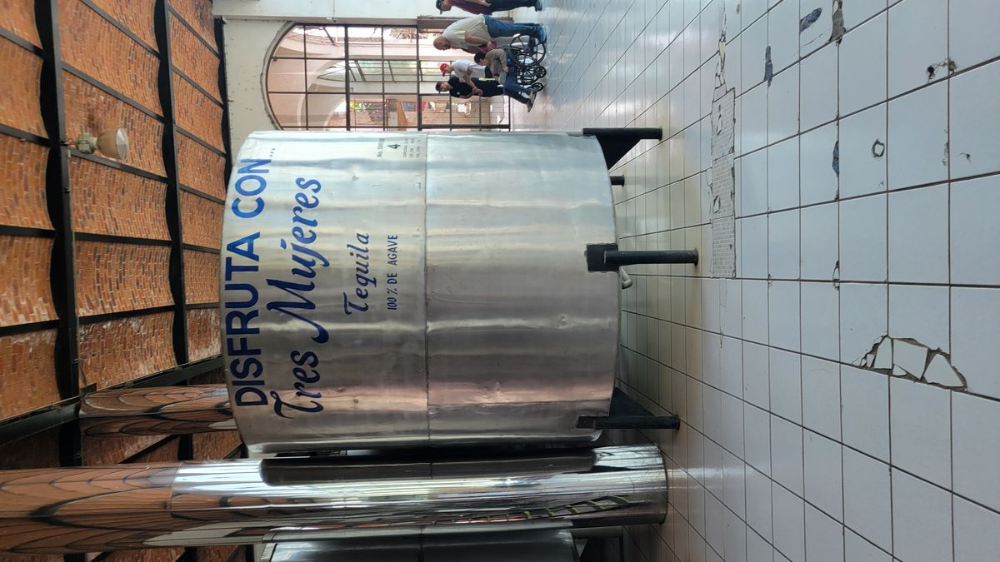
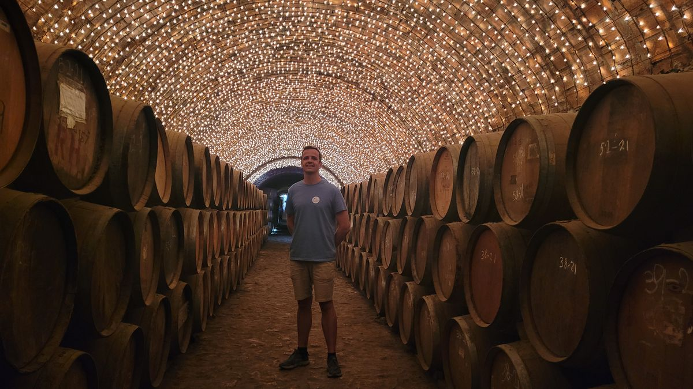
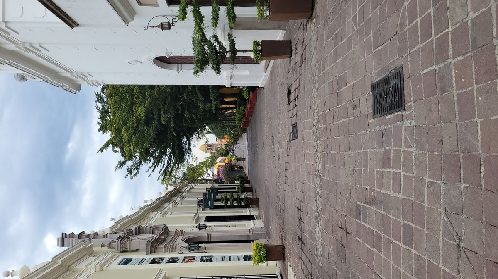

Tequila, Jalisco
Nestled in the heart of Jalisco, México the pueblo of Tequila lies amongst the fields of Blue Agave. Fields that stretch as far as the eye can see. México’s iconic spirt gets its name from its hometown and the small city has fully embraced its heritage. Tourists are bussed (and sometimes brought by a Train owned by the Jose Cuervo distillery, but it runs infrequently) in daily to tour the many distilleries that capitalize of the notoriety of the drink.
I must admit, I’ve done a few tours like this in my time. The distilling process is far from a mystery to me at this point. Find plant that creates a large amount of sugar, extract those sugars, mix with yeast. Let sit for a while. Separate the desired alcohols from the undesired and voila. Intoxicating beverage. Every distillery tour around the world is near identical. Heres the plant we use, heres the big impressive tanks we use, and here where it goes into bottles. So why pay to repeatedly do the same tours over and over again? Because theres no better way to drink Tequila in Tequila.
Tequila, like Champage or Kentucky Bourbon has rules that must be followed in order to claim the infamous name. Not nearly as strict as the others though, Tequila must be grown from Weber’s Blue Agave that is harvested in the State of Jalisco and a few municipalities in surrounding states. Mezcal, is all other types of distilled spirits from Blue Agave plants (not just Weber’s Blue Agave) in others states in México.
My day started by taking the Guadalajara public bus system about 30 mins across town to the tour pickup point. We drove about 90 mins to the Town of Tequila where our tour began at the Tres Mujeres (Three Women’s) distillery. There’s dozens of distilleries in the area that offer tours for various prices. Remember I’m on a budget, so Jose Cuervo’s Tequila Express Train (and lets be honest, I don’t need a train to take me on a Tequilla Express) was out of the budget. They show you the ovens where the Pina’s (the sugary base of the Agave plant) are roasted to begin the sugar extraction process. The machines used to crush the pinas and extract the sugary juices, the fermenting tanks, the stills and blah blah blah. Ok, finally time for the tasting.




Tequila is normally clear, but a not required ageing process may give it a darker color. Tequila is aged in Oak barrels, usually obtained 2nd hand from wineries and distilleries in the United States. They will sand down the insides to avoid imparting any unwanted flavors and then char the remaining wood. The longest a Tequila will be aged in 3 years but most are only a few months, if at all.
We had a few shots at the distillery and the got driven into the town where we stopped at some sort of Cantina. Details were hazy at this point, not because of the Tequila but because I was the only person on the tour that spoke English. I booked the English tour, but was the only one who booked for English that day so they sent a bilingual guide. He insisted it was not problem, but it become apparent that he was getting tired from repeating the same information. A 5-minute-long lecture in Spanish would turn into 1 minute when it was my turn. Not a deal killer, I wasn’t there for the education anyways. We tried some sort of Agave Beer, a few more varieties of Tequila and then took turns drinking directly from a barrel of Tequila. Why? I have no clue.
We were then taken to the Centro de Tequila which was readily apparent that Jose Curevo holds a disproportionae amount of influence. Their main tasting room, multiple expensive restaurants and hotels line the main plaza, all owned by the worlds largest Tequilla producer. The town is beautiful and allows public drinking so stalls selling shots and coctails of tequilla line the main plaza. I did not imbibe as we were already many shots deep into this experience and it was only lunch time.

After eating lunch at the local market (Jalisco’s famous Torta Ahogoda or drowned sandwich) we made our way back to Guadalajara listening to famous Mexican music on the way back. All-in-all it was a worthwhile experience. Nothing ground breaking for those of us who have done this type of thing many times before, but as they say 'When in Rome.' Or Maybe When in Tequila.